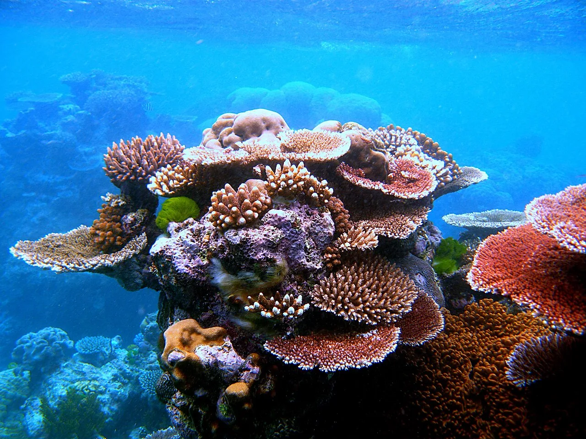
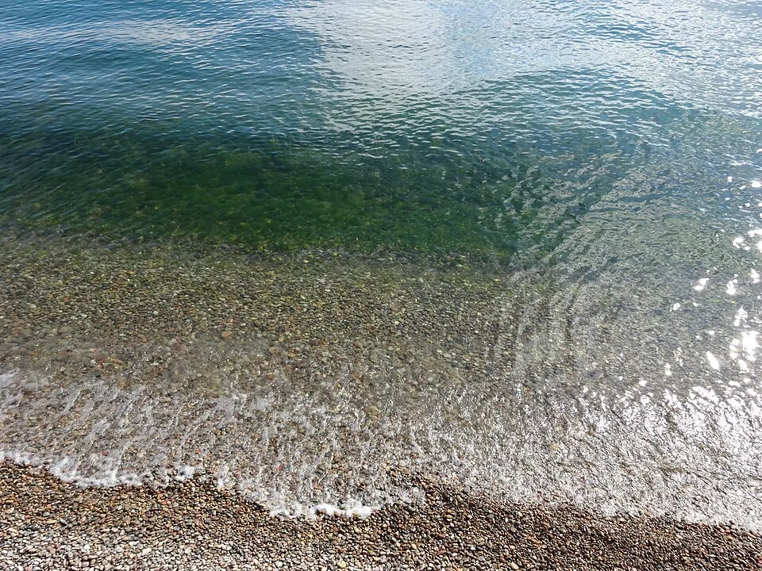
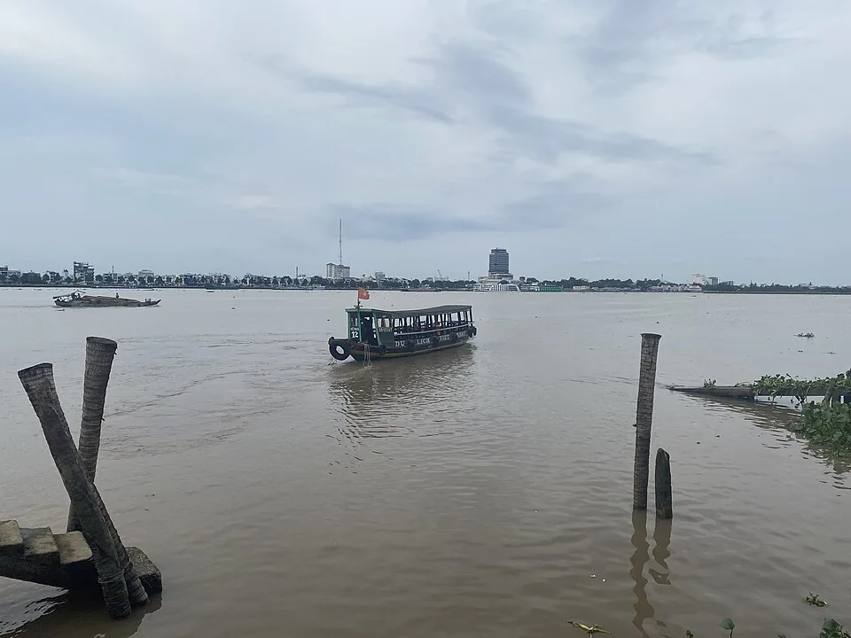
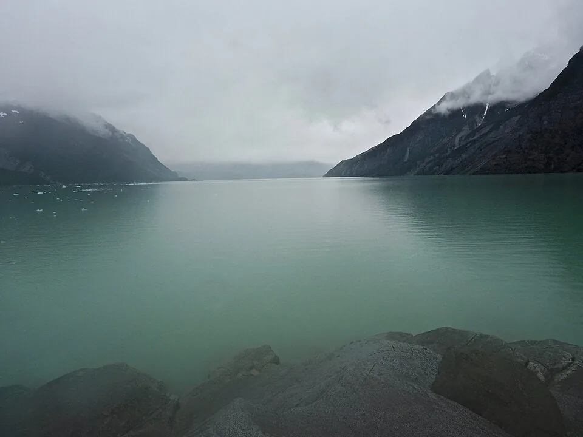
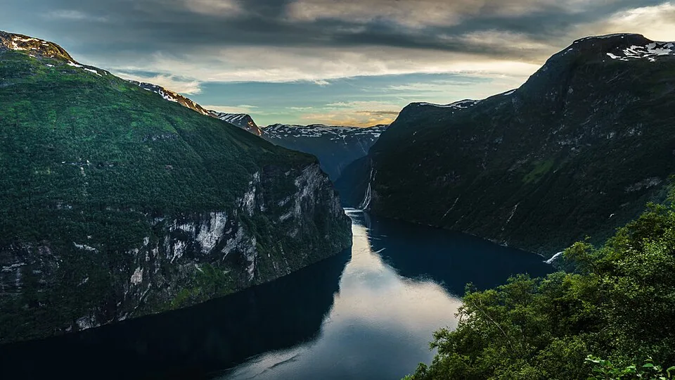
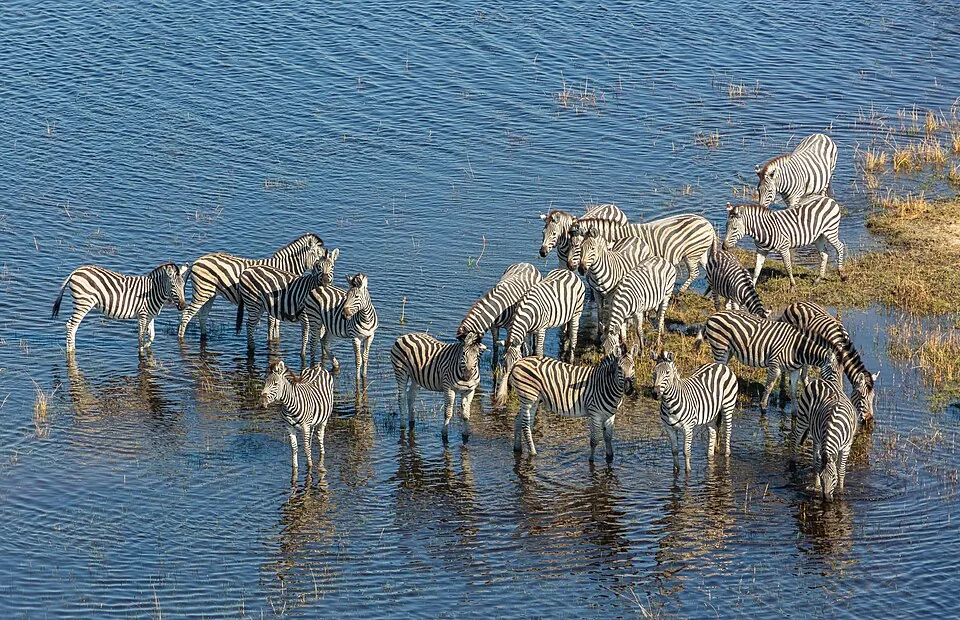
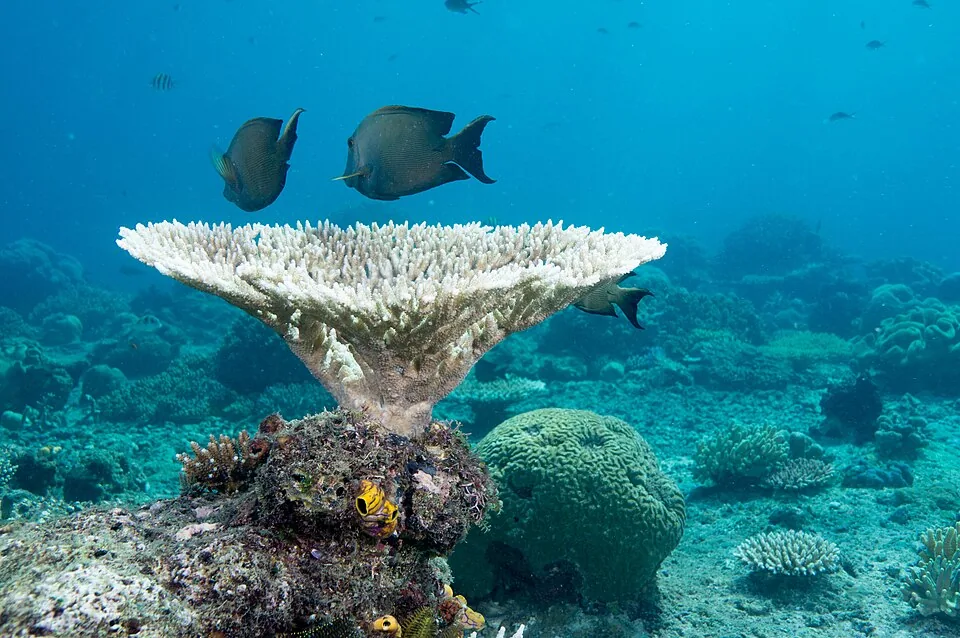
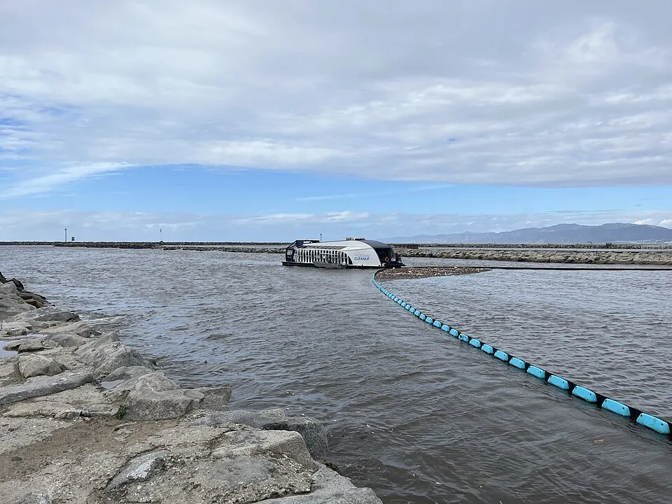
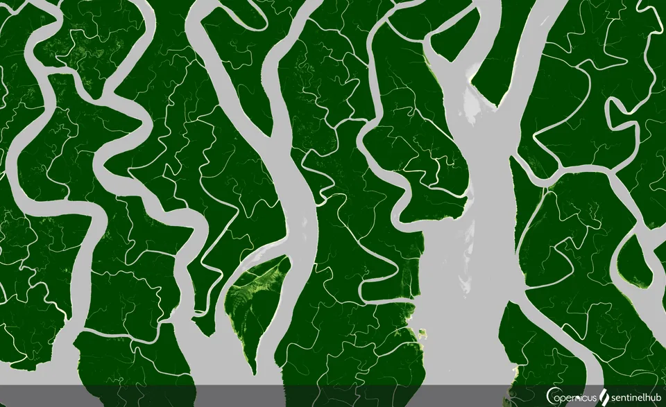

Inside Raja Ampat's Heat-Tolerant Coral Nurseries
📍 Raja Ampat, Indonesia · Oct 2026
Two years of survival data show how selectively propagating lagoon-edge coral genotypes helps reefs withstand heatwaves.
Read full dispatch →Aquatica restores rivers, safeguards groundwater and defends ocean life — from the first mountain spring to the deepest trench. Scroll down and descend with us.
Measured results from our field teams and volunteer network.
From alpine glaciers to tropical coral atolls, every watershed connects to the same global ocean.

📍 Great Barrier Reef, AustraliaPropagating thermally tolerant coral genotypes across outer reef slopes to help reefs recover after marine heatwaves.
See reef projects →
📍 Lake Baikal, RussiaHolding roughly 20% of Earth's unfrozen surface freshwater, deep lakes require strict nutrient and shoreline monitoring.
Explore water data →
📍 Mekong Delta, VietnamWorking with riverside towns to capture drifting plastic waste and restore mangrove buffers before rivers meet the sea.
See river projects →
📍 Patagonia, ChileMountain glaciers and alpine springs feed entire river basins downstream — protecting them keeps whole ecosystems alive.
Follow the water journey →
📍 Geirangerfjord, NorwayRecovering abandoned fishing gear and reducing shipping runoff in steep, deep-water coastal fjords.
Learn ocean threats →
📍 Okavango Delta, BotswanaInland deltas recharge groundwater, shelter migratory wildlife and filter sediment across seasonal floodplains.
View 2030 targets →Reef nurseries, river clean-ups, wetland rebuilding and clean-water wells.
Dive in →Interactive charts on plastic, freshwater scarcity and ocean health — plus your water footprint.
Dive in →Threats facing our waters, myths vs facts, a quiz, and everyday actions that matter.
Dive in →Meet the scientists, divers and organisers behind the mission — and join the crew.
Dive in →Our roadmap to 2030, aligned with the UN goals for clean water and life below water.
Dive in →Make a personal promise for water — and watch the community ocean fill up.
Dive in →Trash is drifting into the reef! Tap each piece to scoop it out before the timer runs out, and watch marine life return.
Press Start clean-up to begin.
Long-form reporting, survival data and lessons from our field teams worldwide.

Field Report📍 Raja Ampat, Indonesia · Oct 2026
Two years of survival data show how selectively propagating lagoon-edge coral genotypes helps reefs withstand heatwaves.
Read full dispatch →
Freshwater📍 Klang River & Mekong Delta · Sep 2026
Capturing 310 tonnes of river plastic is only half the job — publishing open brand audits is how we drive upstream policy.
Read full dispatch →
Science & Data📍 Sundarbans Delta, Bangladesh · Aug 2026
Why reopening silted tidal channels before planting a single mangrove seedling triples survival and locks away blue carbon.
Read full dispatch →Clear answers to the biggest questions in freshwater conservation and ocean science.
Irrigating crops accounts for roughly seven out of every ten litres of freshwater withdrawn globally. Precision drip systems, soil-moisture sensors and restoring riparian wetlands can cut farm withdrawals by 30–50% without reducing harvests.
Seawater absorbs roughly a quarter of human CO₂ emissions, forming carbonic acid and lowering ocean pH. That reduces carbonate ions needed by corals, oysters, pteropods and shellfish to build skeletons and shells.
Paper parks fail without enforcement or community buy-in. Fully protected reserves co-managed with local fishers consistently show higher fish biomass within 3–5 years — spilling adult fish over into neighbouring fishing grounds.
Nearly 99% of Earth's liquid freshwater sits underground in aquifers. When pumping outpaces rainfall recharge, wells dry up, land sinks, and saltwater intrudes into coastal drinking-water supplies.
“With every drop of water you drink, every breath you take, you're connected to the sea.”
— Sylvia Earle, oceanographer